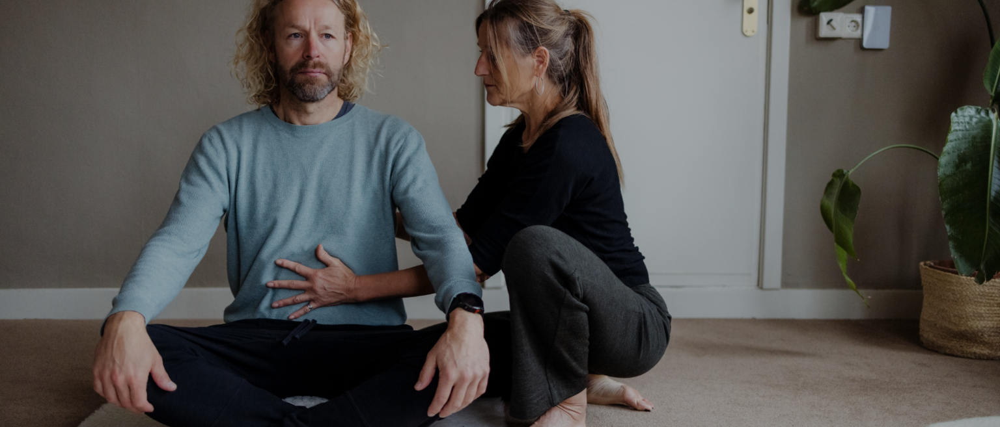

Van spanning naar ontspanning door middel van je ademhaling
Ademen, dat is het eerste wat je doet als je op aarde komt. Het baby’tje wat een ademteug neemt en zo de longen opent. Ook is de adem het laatste wat je doet als je leven weer verlaat, die zucht, die ademteug. Ademen is de meest essentiële levensfunctie van je leven. Iedereen kan het, iedereen doet het de hele dag, zo’n 21.600 keer.
Maar heb jij er weleens stil bijgestaan wat jouw ademhaling voor jou en je mentale en fysieke gezondheid kan betekenen? Dat de adem een cruciale sleutel is voor een gezonder, energieker, bewuster en ontspannen leven?
Weet jij hoe je ademt, wat de kwaliteit van je adem is? Is je adem ontspannen of houd je je adem vaak vast? Is je adem ruim, diep of oppervlakkig? Snel of langzaam? Hoog in de borst, of in de buik? Beweegt je middenrif mee?
De adem is verbonden aan het leven dat we leiden. Je ademhaling is verbonden met je emoties, je zenuwstelsel, en zelfs je gedragspatronen. De adem is hiermee een spiegel van hoe het met je gaat.
Zoals bij een druk vol leven de meeste mensen ‘onbewust’ oppervlakkig ademen. En je bijvoorbeeld bij spanning of angst, sneller, oppervlakkiger, korter en hoger ademt, meer in de borst dan in de buik. Slecht een deel van onze longen wordt dan gebruikt. We halen dan niet zo veel zuurstof binnen als we zouden kunnen. Met hartkwalen, slaapproblemen en vermoeidheid als mogelijke gevolgen. Ook zijn we door een verminderde zuurstoftoevoer vatbaarder voor ziektes en voelen we ons minder vitaal.
Het mooie van het werken met de adem is, dat de adem het enige proces is in ons lichaam wat wij zelf kunnen besturen. Hierdoor wordt het mogelijk om jouw eigen ontspanningssysteem te resetten elke dag weer.

In 1:1 begeleiding en ademcirkels ondersteun ik jou in een veilige bedding naar een gezonde ademhaling. Ik ben gespecialiseerd in ademtechnieken -pranayama- vanuit de yogaleer, de Verbonden Adem, functioneel ademen en het optimaliseren van jouw lichaamshouding met oefeningen doen voor de ademhalingsspieren (borst, rug, buik, psoas).
Dit is een specifieke therapeutische ademtechniek waarbij je de in- en uitademing aan elkaar verbind en er zo meer zuurstof in je lichaam komt. Dit opent je ademsysteem en kan dat wat in je lijf en onderbewustzijn ligt opgeslagen aan ‘oude’ emoties, blokkades, gedachtenpatronen en spanning, weer op celniveau in beweging brengen en doorvoeld worden. Stress wordt fysiek, mentaal en emotioneel los gelaten. Levensenergie gaat beter stromen zodat jij weer ruimte en een diepe ontspanning mag ervaren. Lichaam en geest worden op een fundamenteel niveau geheeld en tot rust gebracht in het voltooien van dit proces. Dit roept vaak een gevoel van dankbaarheid, opluchting en blijdschap op.
Ademwerk is niet geschikt voor zwangere vrouwen en mensen met: epilepsie, glaucoom, hartklachten of psychiatrische klachten (dsm diagnose).
Ga voor info en mijn lidmaatschap naar: De beste ademcoaches en breathwork facilitators (thebreathworkmovement.nl)
Locatie: de Heelboom, centrum voor balans en gezondheid, ’t Rikkelder 22c te Ruurlo. Elders op locatie of thuis worden reiskosten en reistijd doorberekend.
Adem is de essentie van ons leven, verandert je adem dan verandert je leven!
Mijn eerste ervaring met ademwerk was als twintig jarige bij een gespecialiseerde logepediste. Ik was veel hees, had chronische keelontsteking en er zat een blokkade op mijn keelgebied. Ik leerde hier te voelen, te spreken, beter te ademhalen en hierdoor mijn stem anders te gebruiken. Ik ervaarde toen al dat de adem gekoppeld is aan emoties en ‘het leven’.
Jaren laten in 2013, nam ik voor het eerst deel aan een ademcirkel. Ik wist niet wat mij overkwam. Zoveel sensaties, gevoelens en tranen. Wat er allemaal loskwam…. Niet makkelijk maar wel goed en fijn. Ik ging lichter en opgeruimder naar huis.
Nog steeds neem ik deel aan ademcirkels. Omdat ik het ook nodig heb om te blijven ontladen, te verzachten, stress en spanning los te laten. Hoeveel lichaamswerk, yoga en meditatie ik ook doe en heb gedaan, de verbonden adem gaat een stapje verder. Dieper in ontspanning en loslaten wat niet meer dient, meer ademruimte voelen. De verbonden adem is zo ‘magisch’, krachtig en transformerend.
Kom het het ervaren, ik begeleid je graag in een veranderingsproces met de verbonden adem!!!
Bij iedere les of sessie is het mijn doel om mensen een gevoel van ’thuis komen’ te geven. Heb je een vraag of wil je een afspraak maken? Neem gerust contact met mij op.